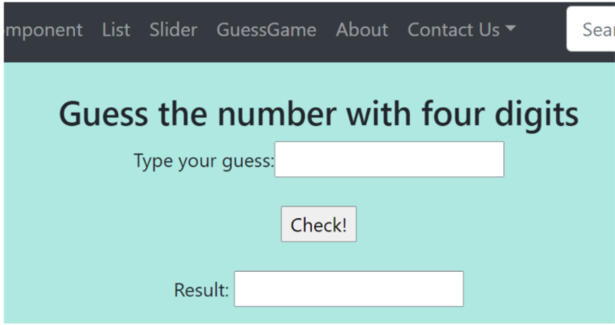
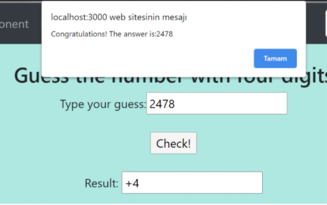
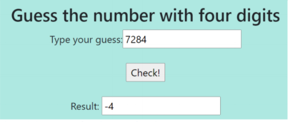
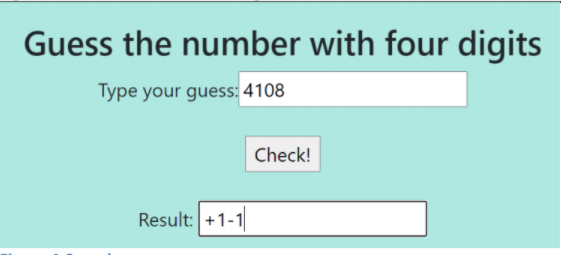
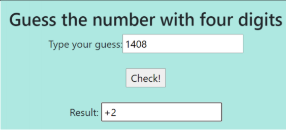
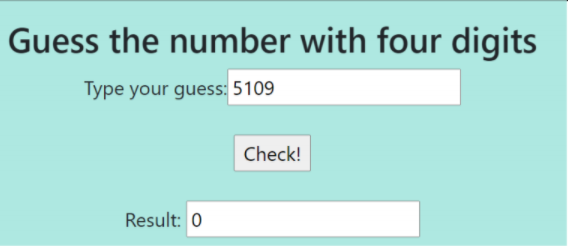

Sayı Tahmin Oyunu
Bu oyun, 1234, 8075, 6825 gibi her basamakta farklı sayılardan oluşan dört basamaklı bir sayının tahmin edilmesine dayanmaktadır.
Dört basamaklı sayı içinde basamak tekrarı yoktur.
Dört basamaklı rasgele sayının "2478" olduğunu varsayın. Kullanıcı sayıyı tahmin etmeye çalışacaktır.

Kullanıcı "Kontrol et!" düğmesine tıkladığında sonuç görünür .

Tahmin doğruysa, ekranda bir "tebrikler" uyarısı görünecektir. 4 hane doğrudur ve doğru konumda oldukları için sonuç “4” olacaktır.

Tahmin "7284" ise, dört sayının her biri "2478" de var ama her biri yanlış yerde bulunuyor.Yani 4 numara tahmin ediliyor ve her biri yanlış yerde.Bu durumda sonuç -4 olacaktır.

Tahmin "4108" ise, 4 ve 8 "2478" de vardır.4 yanlış yerde ve 8 doğru yerde.Yani sayılardan ikisinin doğru yerde olduğu ve birinin doğru yerde olmadığı tahmin ediliyor.Bu durumda sonuç 1-1 olacaktır.

Tahmin "1408" ise, 4 ve 8 "2478" de vardır.Her ikisi de doğru yerde bulunur. Böylece sayılardan ikisi doğru yerde tahmin edilir.Bu durumda sonuç 2 olacaktır.

Tahmin "5109" ise, sayıların hiçbiri "2478" de yoktur.Yani sonuç 0 olmalıdır.